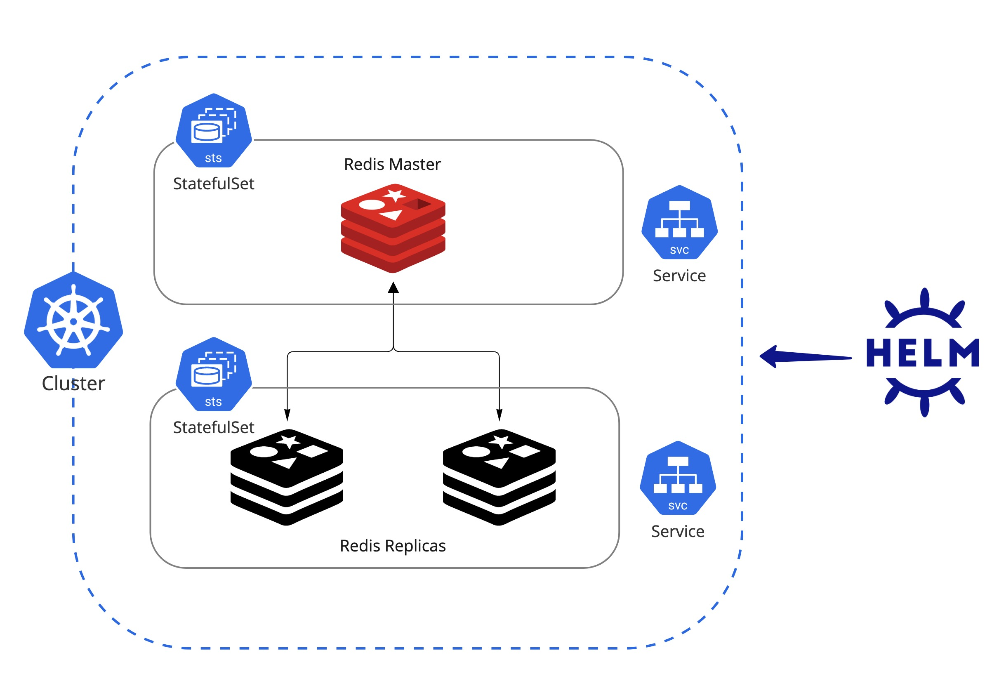

핸즈온. Helm으로 Redis master-replica cluster 환경 구성 및 배포
Kind 환경 구성 및 애플리케이션 배포 실습
이번 실습은 redis 애플리케이션을 Helm을 통해 master-replica cluster 구성으로 배포 해보는 실습 이다. Helm으로 애플리케이션 배포를 위한 기본 작업들을 이해 할 수 있다.
사전 준비 사항
Kind 환경
로컬 Kind 클러스터 구성: 관련 링크
Architecture

1. Helm으로 Redis M-S Cluster 환경 구성 및 배포
대표적인 cache 애플리케이션인 Redis를 쿠버네티스 환경에 helm으로 손쉽게 Master-Replica 구성 배포를 해 본다. Redis 컨테이너 이미지는 Redis에서 공식 지원하기 때문에 Standalone 환경 구성은 간단히 배포할 수 있으나 Cluster 구성을 해야 할 경우 리소스의 연관관계와 클러스터의 설정값들을 맞혀서 추가해 주어야 한다. Bitnami에서 이러한 구성 정보를 helm으로 템플릿 및 패키징화 해 놓았으며 사용자는 원하는 구성 변숫값만 수정하면 Master Replica 구성부터 Sentinel 구성까지 손쉽게 배포할 수 있다.
1.1 Helm Repo 추가
Bitnami helm repo를 추가
helm repo add bitnami https://charts.bitnami.com/bitnami
1.2 Redis 구성 환경 설정
두 번째로 helm vaules 값 원하는 구성(Master와 Replica Cluster)에 맞게 변숫값을 업데이트
현재 기본 설정 값이 Replication 이므로 architecture에 대해서는 수정 하지 않아도 되며 실습 환경에 맞게 Storage Class 이름과 크기만 조절 하도록 한다.
Tip
로컬 Kind 클러스터인 경우는 standard가 기본 storageClass 이므로 추가할 필요 없다.
자세한 정보에 대해 알고 싶다면 kubectl get storageclasses.storage.k8s.io 을 통해서 확인 가능하다.
global:
storageClass: "standard"
master:
persistence:
size: 50Mi
replica:
persistence:
size: 50Mi
1.3 설치
해당 구성 정보에 맞춰서 redis cluster 배포
helm install redis-cluster bitnami/redis --namespace redis \
--create-namespace -f redis-values.yaml
만약 values 값을 업데이트한 후 다시 릴리즈해야 하는 경우는 upgrade 명령어를 통해 적용할 수 있다
helm upgrade --install redis-cluster bitnami/redis \
--namespace redis --create-namespace -f redis-values.yaml
다음과 같이 revision이 올라간 것을 확인 할 수 있다.
NAMESPACE: redis
STATUS: deployed
REVISION: 2
TEST SUITE: None
2. Redis M-S Cluster 환경 구성 확인
2.1 구성 확인
배포가 정상적으로 완료가 되면 Pod 정보를 찾을 수 있으며 다음과 같이 임시 redis client pod를 통해 redis에 접근 및 설정값을 확인할 수 있다.
# Redis Password 확인
export REDIS_PASSWORD=$(kubectl get secret --namespace redis redis-cluster -o jsonpath="{.data.redis-password}" | base64 -d)
# 테스트용 redis-client pod 생성
kubectl run --namespace redis redis-client --restart='Never' --env REDIS_PASSWORD=$REDIS_PASSWORD --image docker.io/bitnami/redis:7.0.3-debian-11-r0 --command -- sleep infinity
# 테스트용 redis-client pod에 접근
kubectl exec --tty -i redis-client \
--namespace redis -- bash
배포된 Redis 서버에 접속
# Redis 서버(master 혹은 replicas)에 접속
REDISCLI_AUTH="$REDIS_PASSWORD" redis-cli -h redis-cluster-master
REDISCLI_AUTH="$REDIS_PASSWORD" redis-cli -h redis-cluster-replicas
# 예상 output
redis-client:/$ REDISCLI_AUTH="$REDIS_PASSWORD" redis-cli -h redis-cluster-master
redis-cluster-master:6379>
redis-cluster-master:6379>
redis-cluster-master:6379> INFO
## Server
redis_version:7.0.3
redis_git_sha1:00000000
...
## Replication
role:master
connected_slaves:3
slave0:ip=redis-cluster-replicas-1.,port=6379,state=online,offset=574,lag=1
slave1:ip=redis-cluster-replicas-2.,port=6379,state=online,offset=574,lag=1
slave2:ip=redis-cluster-replicas-0.,port=6379,state=online,offset=574,lag=0
master_failover_state:no-failover
...
위의 output에 현재 접근한 서버는 master이고 slave가 3대가 구성된 것으로 나오며 실제로 pod 이름과 동일하게 매칭되는 것을 확인할 수 있다.
kubectl get pods -n redis -l app.kubernetes.io/component=replica
NAME READY STATUS RESTARTS AGE
redis-cluster-replicas-0 1/1 Running 0 13m
redis-cluster-replicas-1 1/1 Running 0 14m
redis-cluster-replicas-2 1/1 Running 0 15m
2.1 Key/Value 추가 및 조회 확인
간단히 key/value를 추가(master에서만 가능)하고 조회(master/replica 둘 다 가능) 할 수 있다
redis-cluster-master:6379> SET mykey test
OK
redis-cluster-master:6379>
redis-cluster-master:6379> KEYS *
1) "mykey"
redis-cluster-master:6379>
redis-cluster-master:6379> GET mykey
"test"
redis-cluster-master:6379>
정상적으로 data가 replication 되고 있는지 보고 싶은 경우는 Replica 서버에 들어가서 GET mykey를 통해 똑같은 값이 나오는지 확인 할 수 있다.
redis-client:/$ REDISCLI_AUTH="$REDIS_PASSWORD" redis-cli -h redis-cluster-replicas
redis-cluster-replicas:6379>
redis-cluster-replicas:6379> KEYS *
1) "mykey"
redis-cluster-replicas:6379> GET mykey
"test"
redis-cluster-replicas:6379>
Clean Up
실습 완료 후 Redis Helm Release 제거
helm uninstall redis-cluster -n redis
kind cluster 삭제
kind delete cluster